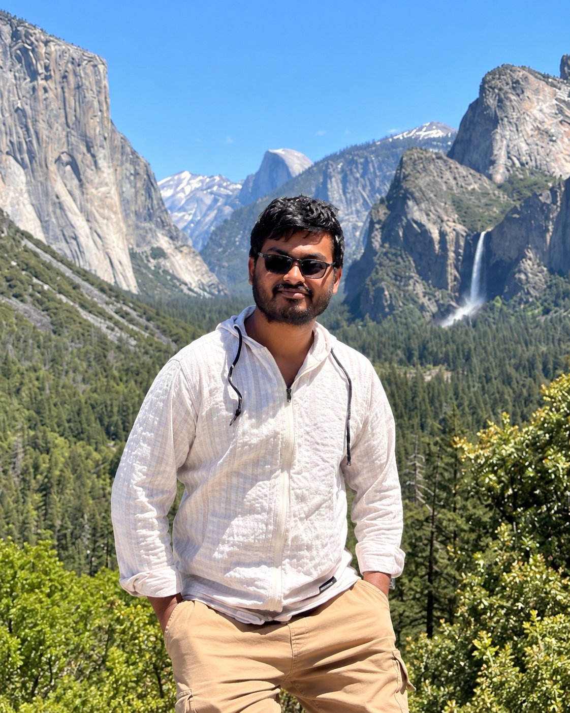

Dhrubajyoti Ghosh, PhD
Assistant Professor of Data Science and Analytics at Kennesaw State University. I develop statistical and machine-learning methods for longitudinal studies, clinical trials, causal inference, nonlinear time series, and complex biomedical data.
Google Scholar · GitHub · LinkedIn · ORCID

Statistical methodology for complex longitudinal and causal data
My work sits at the intersection of rigorous statistical inference, modern computation, and biomedical applications. A recurring goal is to develop methods that remain reliable when data are multivariate, longitudinal, high-dimensional, non-Gaussian, network-structured, or incompletely observed.
Longitudinal & Clinical Trials
Rank-based inference, multivariate longitudinal outcomes, missing data, trial design, power, and covariate adjustment.
Imaging & Neurodegeneration
Alzheimer’s, Parkinson’s, MRI/CT, survival analysis, digital twins, and virtual trials.
Nonparametric & Robust Inference
U-statistics, rank methods, global testing, resampling, and robust inference for complex data.
Data Science & AI
Machine learning, graph learning, misinformation, structured high-dimensional data, and computational statistical methods.
Time Series & Higher-Order Dependence
Polyspectra, nonlinear processes, quadratic prediction, and higher-order frequency-domain inference.
Causal Inference & Discovery
Causal discovery, instrumental variables, Mendelian randomization, graph-structured causal learning, and causal estimation.
Representative publications
Bernoulli (2026) · D. Ghosh, T. McElroy, S. Lahiri
Annals of Applied Statistics (accepted/in press) · S. Pal, D. Ghosh, S. Yang
Journal of Multivariate Analysis 209, 105447 (2025) · D. Ghosh, S. Luo
Statistics in Medicine 44, e70261 (2025) · D. Ghosh, X. Xu, S. Luo
Journal of Alzheimer’s Disease (2025) · D. Ghosh, S. Pal, M. Lutz, S. Luo, ADNI
LINDT-C Lab
LINDT-C stands for Longitudinal, Imaging, Nonparametric, Data Science, Time Series & Causal Inference. The lab develops rigorous statistical and computational methodology for complex scientific data, with particular strengths in longitudinal inference, causal learning, biomedical applications, nonlinear time series, and modern data science.
What we are working on
Robust longitudinal inference
Extending rank-based longitudinal methods to covariate adjustment, incomplete data, observational studies, and complex trial designs.
Network-aware causal learning
Combining instrumental variables, graph regularization, and latent/network structure for high-dimensional causal discovery and estimation.
Biomedical data science
Methods and applications in Alzheimer’s and Parkinson’s disease, medical imaging, digital twins, survival prediction, and clinical-trial analysis.
Nonlinear & structured data
Polyspectral inference, nonlinear dependence, spatial/environmental health, graph learning, and AI-assisted statistical workflows.
Contact
Dhrubajyoti Ghosh
Assistant Professor, School of Data Science and Analytics
Kennesaw State University
dghosh3@kennesaw.edu